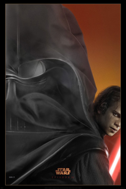
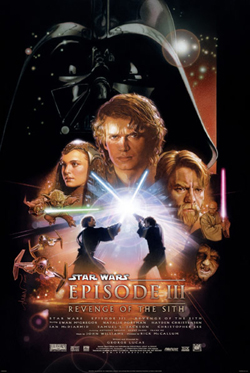
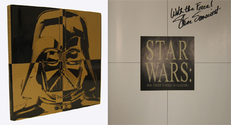
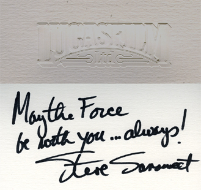
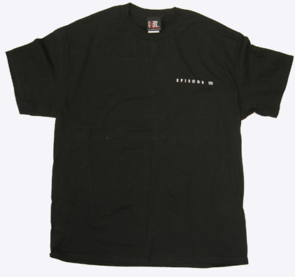

The next item in our eBay auction benefiting the Starlight Starbright Children's Foundation is a special one, because it comes from the true rulers of the Republic - our friends at Lucasfilm Ltd. and Steve Sansweet. We took the long elevator ride up to the top of the Emperor's tower and were rewarded with a fantastic set of items that we are thrilled to be presenting to you now. You will be bidding on the entire set, which consists of:
A 27x40 original double sided Version A teaser poster for Star Wars Episode III Revenge of the Sith. This magnificent poster shows Anakin in the lower right corner with his cape billowing behind him to form the image of Darth Vader's mask. Unlike traditional posters, the reverse image is seen when the poster is turned over. A 27x40 original double sided Version B launch poster for Star Wars Episode III Revenge of the Sith. This is the movie poster that is produced for movie theater display cases. Also like the teaser poster, the reverse image is seen when the poster is turned over.
An autographed hardcover copy of a 1st Edition (Out Of Print) Star Wars: From Concept to Screen to Collectible, by Steve Sansweet – a 132 page volume chronicling Lucas's growth from filmmaker to merchandiser and the history of the design and development of the Original Star Wars Trilogy inspired items from shoelaces to yogurt flavors that have been produced throughout the years.
A signed note from Steve Sansweet on a Lucasfilm Ltd. embossed gift card that reads: "May the Force be with you...always! Steve Sansweet"
And the gem of the collection, an internal Lucasfilm Ltd Black Episode III 100% cotton t-shirt (Size: L) with "Episode III" embroidered over the left breast – this official t-shirt is used as a gift to celebrities and VIPs by Lucasfilm Ltd.
Each item is a rare find, and put together, this set is a tremendous prize!
Click here to bid on this item now!
Read more about our auction items here and here, and keep checking back for the next auction announcement. We've got some really exciting products coming your way, so strap yourselves in while we make the jump to lightspeed!
You may also click here to view all Auction Items posted so far.